JMeter 定时器一般用来设置延迟与同步。它的作用域和优先级如下：
- 定时器的优先级高于 Sampler。
- 在同一作用域（比如控制器下）有多个定时器存在，每个定时器都会执行。
- 在某一 Sampler 节点下的定时器，只对这个 Sampler 有效。
JMeter 一共有 9 种定时器：
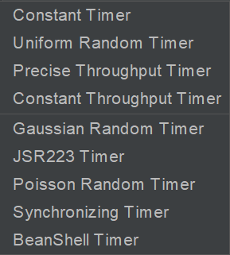
Constant Timer
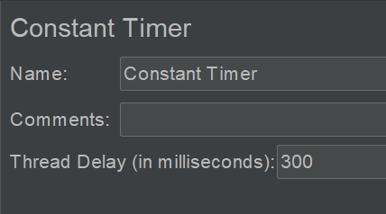
固定值，多用来模拟思考时间。
Uniform Random Timer
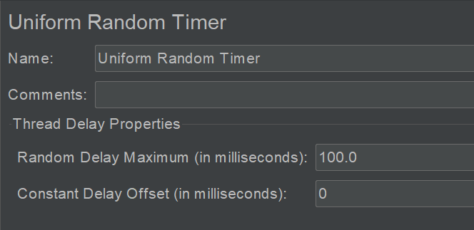
随机时间，分布会更均匀。
Random Delay Maximum：随机延迟时间。
Constant Delay Offset：固定延迟时间。
示例：
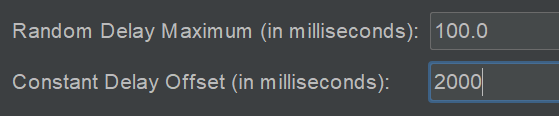
会让线程延迟在 2.0 到 2.1 秒之间。
Precise Throughput Timer
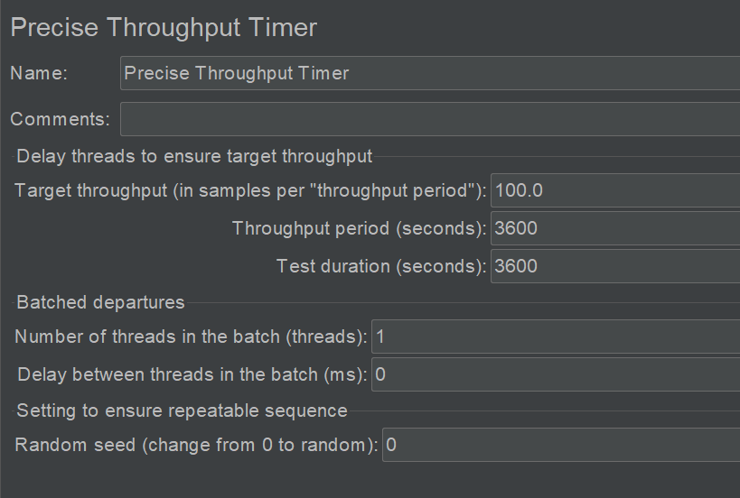
用的比较少，比 Constant Throughput Timer 更复杂更高级的用来控制吞吐量的一个定时器。
Constant Throughput Timer
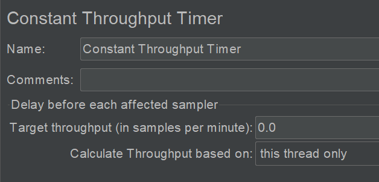
控制吞吐量，尽量保持 Sampler 产生的吞吐量（RPS）在一个固定的范围内。
Target throughput：目标吞吐量。JMeter 会根据吞吐量、并发线程数来计算迭代的时间间隔，如果吞吐量大过设定值，就增加；反之减少。
Calculate Throughput based on：
this thread only：仅针对当前线程，每个线程互不干扰，分开计算需要延迟多少时间。
all active threads：把所有线程的吞吐量合在一起作为因子计算。
all active threads in current thread group：针对当前线程组中的所有线程。
all active threads (shared)：在所有线程中，随便获取一个线程上次运行的实际来进行计算，结果随机不一定准确，只能努力控制吞吐量在某一个范围。
all active threads in current thread group (shared)：在上面意思一样，范围是当前线程组。
Gaussian Random Timer
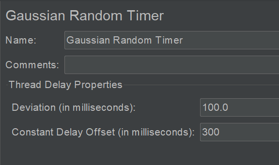
生成一个呈高斯分布的时间间隔，可以用来离散请求。
Deviation：一个浮动范围的偏差值。
Constant Delay Offset：固定延迟时间。
JSR223 Timer
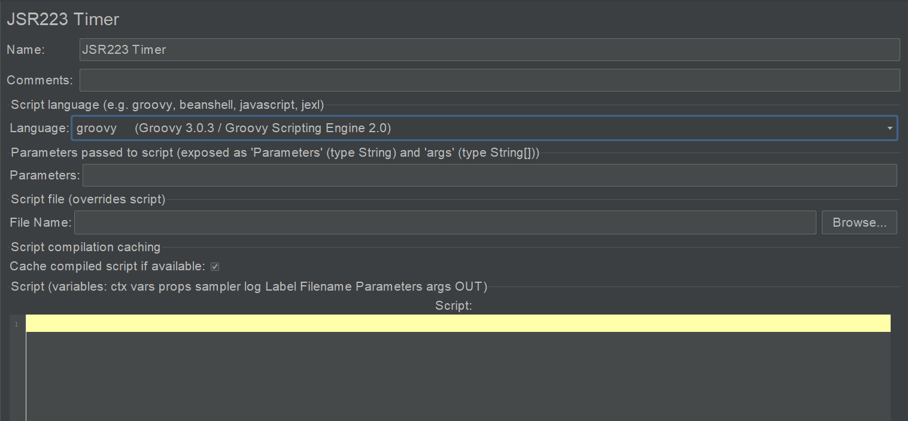
跟 BeanShell 类似，可以运行 JavaScript 等其他语言。
JDK 集成了 JS 的运行引擎，可以运行 JavaScript 脚本，JSR223 是一个标准，为脚本引擎提供了统一的接口、统一的访问模式。
Poisson Random Timer
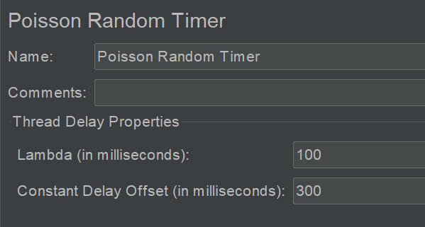
随机时间，呈泊松分布。
Lambda：泊松分布的期望和方差。
Constant Delay Offset：固定延迟时间。
Synchronizing Timer
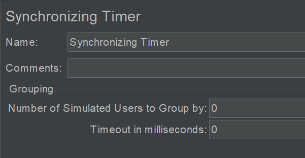
同步定时器，用来模拟多用户并发同一时刻发起请求。
Number of Simulated Users to Group by：等待 x 个用户（线程）集合后开始释放（发起请求）。
默认为 0，等同于设置为线程租中的线程数量。
Timeout in milliseconds：等待时长，如果等待这么长时间，还没有达到上个选项设置的数量，那么不再等待，立即释放已到达的线程。
默认为 0，等待线程数达到上个选项设置的数量才释放。
BeanShell Timer
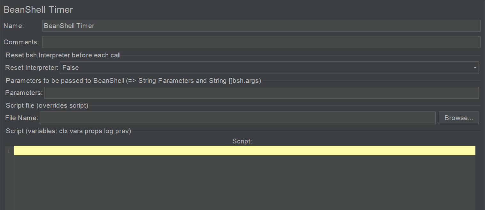
Reset Interpreter：是否每次迭代重置解释器，默认 False。官方建议在长时间运行的脚本中才设置为 True。
Parameters：入参，可以是单个变量，也可以是数组。
File Name：从脚本文件中读取 BeanShell 脚本。
Script：
ctx：通过 JmeterContent 实例获取运行时信息，如log.error(ctx.getThreadNum().toString());。
vars：访问或设置变量，如vars.get("name")，vars.put("name", "dongfanger")。
props：访问 JMeter 属性（%JMETER_HOME%/bin/jmeter.properties），如props.get("log_level.jmeter")，props.put("log_level.jmeter", "ERROR")。
log：在代码中调用 log 类来写日志，如log.error("loadtest");。
prev：可以访问前面 Sampler 的结果。
示例：
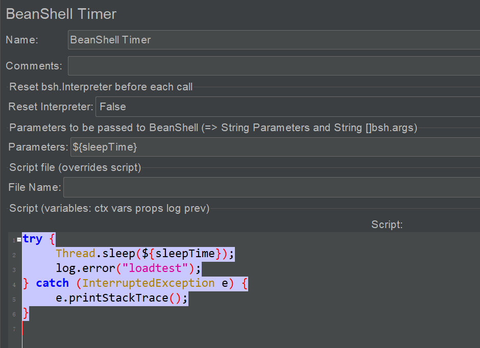
小结
本文首先介绍了 JMeter 定时器的作用域和优先级，然后分别介绍了各式各样的定时器，既能设置延迟，也能同步集合，可以固定可以随机，配置与编程并存，五花八门。
参考资料：
《全栈性能测试修炼宝典 JMeter 实战》